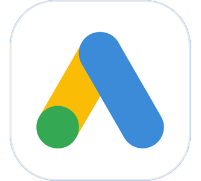

my skills

Adobe Photoshop

Adobe Illustrator
Wordpress

css

HTML

Facebook Ads

Google Ads

years of experience
coffee drank
project completed
awards won
We have created a digital solution that addresses a specific target market's need to achieve a Sustainable Development Goal and generate a positive impact in our communities. As the Product Manager, my role involved creating a functional app prototype that met the brief's requirements. During the development process, I utilized appropriate software and platforms to create an initial visualization of the product. My primary objective was to ensure that the app was user-friendly, engaging, and accessible for its intended audience. Our concept, Linkforce, aimed to connect communities by allowing food banks and shelters to easily access the funds they require to continue supporting their communities. At Linkforce, we have successfully enabled these organizations to secure the necessary resources to continue providing vital services.

The project objective was to enhance the student experience at ADA College through the utilization of Artificial Intelligence. As a proposition designer, I was responsible for creating the proposition and overseeing its development and improvement throughout the project. Despite the lack of a project manager, we had a team meeting to allocate tasks and create a plan of action. My initial tasks involved defining our target users' needs and conducting research to gain a better understanding of their key skills and ambitions. As we were also users ourselves, identifying our needs and those of the institution was relatively straightforward. To expand our research, we created a questionnaire that was sent to the students, and their responses indicated that many of them struggled with revision. We consequently developed an app called ReV Vision, which utilizes AI to evaluate and mark tests while identifying areas of weakness. The app then cross-references these areas with student timetables and available rooms to schedule revision sessions with other students experiencing similar difficulties. A teacher is also assigned to the group to provide additional support.
During the course of this project, we were tasked with creating an infographic that addressed a pressing socioeconomic issue in London. As the designated Graphic Designer, my primary responsibility was to produce a visual representation of the relationship between unemployment and crime rates in various regions. My first step was to contemplate the most effective means of presenting the information provided by the data analyst to our intended audience. While perusing existing examples of infographics, I noticed a trend of utilizing bright colors to capture the reader's attention. However, given the gravity of the issue at hand, I deemed it inappropriate to employ a playful color scheme. I wished to create an atmosphere that conveyed the seriousness of the topic while also integrating images of varying hues to avoid confusing the reader. As an infographic, it was necessary to include visual data to effectively inform the audience, but there was also a risk of presenting insufficient information. As a result, I incorporated text and graphs to bolster the infographic's primary concept, achieving a harmonious balance of style and substance.
The project objective was to design a digital solution that allows secondary school and college students to report incidents of discrimination and harassment. My role as a member of the team was to create assets and develop a prototype. We worked collaboratively and meticulously to create a meaningful end product. We developed a reporting system that enables students to report any instances of discrimination to their school administrators. Additionally, we included several other features such as "Talk to a Teacher" and "Get Advice" sections. Upon completing the prototype, I worked closely with the team to help with their responsibilities, including improving our pitch deck and creating a cohesive business identity that aligned with our assets. Our collective efforts paid off, and we won the industry project competition after presenting our work.
During the course of this project, our college partnered with King Games to develop a game that would tackle pertinent social issues currently affecting the world. As the designated Content Creator, I was responsible for creating a compelling advertisement for the game that our team had collectively produced. This endeavor marked my initial foray into industry projects, providing me with valuable insight into the demands of professional work.
BSc Computer Science with a placement year
IT, Business, Additional English
Middle School
BTEC Extended Certificate Computing, BTEC Diploma Creative Digital Media
Middle School
Elementary School